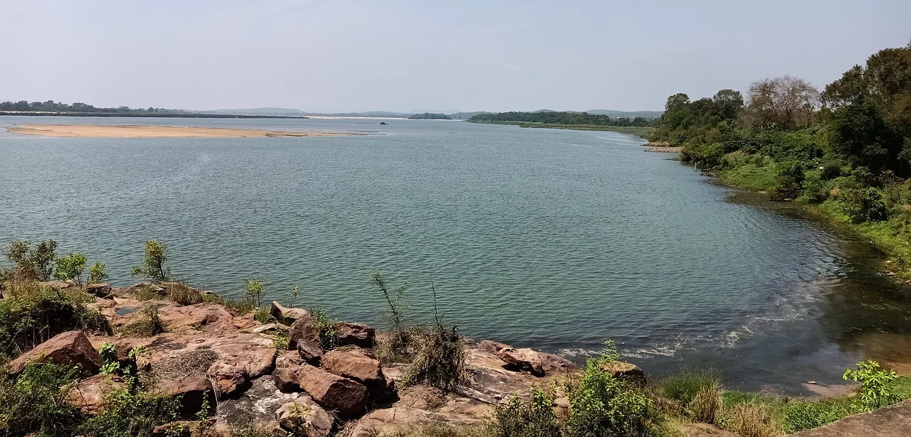
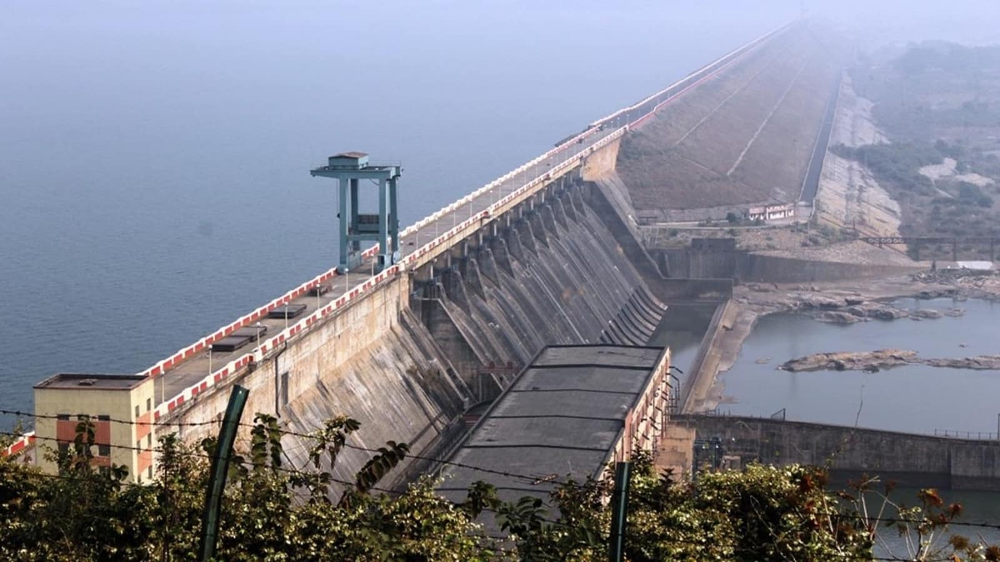

9.Mahanadi River
The Mahanadi basin is the 8th largest basin in the country having total catchment area of 139681.51 sq. km which is nearly 4.28% of the total geographical area of the country. It lies between east longitudes 80° 30' to 86° 50' and north latitudes 19° 21' to 23° 35'. The catchment area of the basin extends over major parts of Chhattisgarh and Odisha and comparatively smaller portions of Jharkhand, Maharashtra and Madhya Pradesh. The Mahanadi basin is divided into 3 sub basins, namely upper, middle and lower Mahanadi. The upper basin is a saucer shaped and mostly lies in Chhattisgarh state. The basin is circular in shape with a diameter of about 400 km and an exit passage of about 160 km length and 60 km breadth. Physiographically, the basin can be divided into four regions, namely, the northern plateau, the Eastern Ghats, the coastal plain and the erosional plains of central table land. The first two are hilly regions. The coastal plain is the delta area which is highly fertile. The central table land is the central interior region of the basin, traversed by the river and its tributaries.
The Mahanadi is one of the major east flowing peninsular rivers in India, originating in Dhamtari district of Chhattisgarh and draining into Bay of Bengal. The Mahanadi river ranks second to the Godavari river among the peninsular rivers in respect of water potential. The Mahanadi rises in a pool, 6 km from Pharsiya village near Nagri Town in Raipur district of Chhattisgarh state at an elevation of 457 m. The total length of the river form origin to its outfall into Bay of Bengal is 851 km of which 357 km lies in Chhattisgarh and 494 km in Odisha. The river is bounded in the north by Central India hills, in the south and east by the Eastern Ghats and in the west by Maikal hill range. The three major tributaries namely Seonath, Ib on the Le Bank and Tel on the Right Bank together constitute nearly 46.63% of the total catchment area of the river Mahanadi.

The Seonath is the longest tributary of Mahanadi which rises in the midst of numerous small groups of hills in Rajnandgaon district of Chhattisgarh. It drains an area of about 30761 sq. km which is nearly 25% of the Mahanadi basin. The Ib rises in Raigarh and drains 12447 sq. km of Raigarh district of Chhaisgarh and Sundergarh & Sambalpur districts of Odisha. The Tel rises in village Jorigam of Koraput district of Odisha and drains 22818 sq. km of four districts namely Koraput, Kalahandi, Bolangir and Phulbhani districts of Odisha. Six other small streams between the Mahanadi and the Rushikulya draining directly into the Chilka Lake also form the part of the basin. The Jonk rises in the Khariar hills of Naupada district of Odisha and another tributary Hasdeo rises in Koriya district of Chhattisgarh. The Hasdeo flows for about 340.25 km to join Mahanadi. Its main tributary is the Gej River. The Mand flows for a total length of 260.01 km before its confluence with Mahanadi near Chandarpur district of Maharashtra.

Hirakud Dam Project is a multipurpose scheme intended for flood control, irrigation and power
generation. The dam is built across river Mahanadi at about 15 km upstream of Sambalpur town in the
state of Odisha. This is one of the oldest hydel projects of India, being the first
post-independence major multi purpose river valley project in the country.
Ravishankar Sagar, Dudhawa Reservoir, Sondur Reservoir, Hasdeo Bango and Tandula are other major
projects.